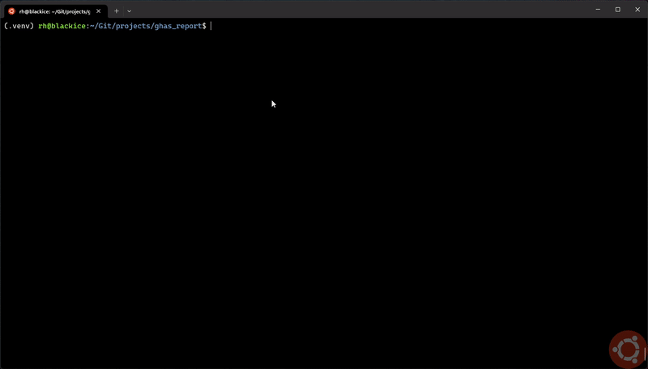

The GHAS Reporting tool is a Python script designed to retrieve various types of GitHub Advanced Security (GHAS) alerts for specified organizations or repositories and generate a report based on the provided options. The output formats supported are CSV, XLSX and JSON.
Supported alert types are code scanning (vulnerabilities in source code), secret scanning (exposed sensitive data), and dependabot alerts (security risks and outdated dependencies).
The script offers flexibility in configuring the report, enabling users to focus on the most relevant security aspects for their organization or repository.
The GHAS Reporting project consists of two Python scripts: ghas_report.py and ghas_enc_key.py.
The primary script, ghas_report.py, is designed to retrieve various types of GitHub Advanced Security (GHAS) alerts for specified organizations or repositories and generate a report based on the provided options. The output formats supported are CSV, XLSX and JSON.
The main goal of this script is to aid vulnerability management and support development and security teams by saving time and providing valuable insights into the security status of their projects.
The ghas_enc_key.py script is primarily used for the first-time setup and changing of the GitHub API key, which is stored in encrypted format in the ghas_conf.json configuration file. This script ensures the secure storage of the API key and allows for easy updates whenever needed.
The script can also be executed without a configuration file, in which case the API key must be specified in an environment variable called GHAS_API_KEY. During execution of the script the --owner and --repo, or --org options must be specified. The --owner option is used to specify the owner of the repository or organization. The --repo option is used to specify the repository name. The --org option is used to specify the organization name.
GitHub Advanced Security is a suite of security tools provided by GitHub to help protect your code and detect vulnerabilities before they reach production. GHAS includes Code scanning, Secret scanning, and Dependab ot alerts. These tools work together to provide a comprehensive security solution for your codebase.

Code scanning is a feature that automatically scans your code for potential security vulnerabilities. It uses the CodeQL query language to perform semantic analysis of your code, helping you identify and fix security issues before they reach production. Code scanning can be integrated into your CI/CD pipeline and can be customized with your own CodeQL queries.
Secret scanning is a feature that scans your code and git history for exposed secrets, such as API keys, passwords, and other sensitive data. When a secret is detected, GitHub sends an alert to help you quickly identify and address the exposure. Secret scanning supports a wide range of secret types and can be extended with custom patterns for your organization's unique requirements.
Dependabot alerts are generated when GitHub detects security vulnerabilities or outdated dependencies in your project's dependencies. Dependabot helps you keep your dependencies up-to-date and secure by sending alerts and creating automated pull requests with updates to resolve the detected issues.
For more information, visit GitHub Advanced Security.
To use these scripts, you will need:
To generate a GitHub API key for an individual repository, follow the instructions here.
For enterprise repositories with Single Sign-On (SSO), follow the instructions here.
pip install -r requirements.txt. This command installs the necessary packages listed in the requirements.txt file.python3 ghas_enc_key.py --api-key. Follow the prompts to enter your GitHub API key. The script will store the API key securely in the ghas_conf.json configuration file.Before using ghas_report.py, you must run the ghas_enc_key.py script to set up your API key. This script securely stores your GitHub API key in a JSON configuration file.
Example 1: Generate all alert reports in the default CSV format
ghas_report.py --allThis command generates all alert reports, including Alert Count, Code Scanning, Secret Scanning, and Dependabot alert reports, in the default CSV format.
Example 2: Generate all alert reports in Microsoft Excel format and apply green table style
ghas_report.py --all --xlsx --theme greenGHAS Excel Report
Example 3: Generate all open alerts report in JSON format
ghas_report.py --all --open --jsonThis command generates all open alert reports, including Alert Count, Code Scanning, Secret Scanning, and Dependabot alert reports and writes the output in JSON format.
Please note that the Alert Count report lists only open alerts by default, even without specifying the -o option.
Example 4: Generate a Code Scan alert report and a Secret Scanning alert report in CSV format
ghas_report.py --codescan --secretscanThis command generates both a Code Scan alert report and a Secret Scanning alert report in the default CSV format.
Example 5: Generate a Dependabot alert report in all formats and specify a custom reports directory
ghas_report.py --dependabot --write-all --reports /path/to/reportsThis command generates a Dependabot alert report and writes the output to all supported formats (CSV and JSON) in a custom reports directory specified by /path/to/reports.
Example 6: Generate an open alerts report in JSON format with custom configuration and key file locations
ghas_report.py --alerts --json --config /path/to/ghas_conf.json --keyfile /path/to/.ghas_envThis command generates an Alert Count report, writes the output in JSON format, and uses custom locations for the configuration file (/path/to/ghas_conf.json) and the encryption key file (/path/to/.ghas_env).
For more usage examples and options, refer to the options sections for each script in the documentation.
| Option | Description |
|---|---|
| -h, --help | Show help message and exit |
| -v, --version | Show program's version number and exit |
| -a, --all | Generate all alert reports |
| -l, --alerts | Generate Alert Count report |
| -c, --codescan | Generate Code Scan alert report |
| -s, --secretscan | Generate Secret Scanning alert report |
| -d, --dependabot | Generate Dependabot alert report |
| -o, --open | Generate report(s) for open alerts only |
| -wA, --write-all | Write output to all formats at once |
| -wC, --csv | Write output to a CSV file (default format) |
| -wX, --xlsx | Write output to a Microsoft Excel file |
| -wJ, --json | Write output to a JSON file |
| -t , --theme | Specify the color theme for "xlsx" file output. Valid keywords are "grey", "blue", "green", "rose", "purple", "aqua", "orange". If none is specified, defaults to "grey". |
| -n, --owner | Specify the owner of a GitHub repository, or organization |
| -g, --org | Specify the name of a GitHub organization |
| -r, --repo | Specify the name of a GitHub repository |
| -lc, --config | Specify file location for the configuration file ("ghas_conf.json") |
| -lk, --keyfile | Specify file location for the encryption key file (".ghas_env") - overrides the location specified in the configuration file |
| -lr, --reports | Specify file location for the reports directory - overrides the location specified in the configuration file |
The "ghas_config.json" JSON configuration file is used to specify connection details, location and project information for the GitHub Advanced Security (GHAS) reporting tool. A sample configuration file "ghas_config_example.json"" is included in the GitHub repository. Simply rename the file to "ghas_config.json" and run the initial setup script to securely store your GitHub API key, then populate the file with your unique project information.
{
"connection": {
"gh_api_url": "https://api.github.com",
"gh_api_key": "GITHUB_API_KEY"
}
}
This section specifies the details for connecting to the GitHub API.
{
"location": {
"reports": "",
"key_file": ""
}
}
This section specifies the location of the reports and the encryption key file.
{
"projects": {
"YOUR_PROJECT1": {
"owner": "GITHUB_OWNER",
"organizations": [
"ORG1"
],
"repositories": [
"REPO1",
"REPO2"
]
},
"YOUR_PROJECT2": {
"owner": "GITHUB_OWNER",
"organizations": [
"ORG1",
"ORG2"
],
"repositories": [
"REPO1"
]
}
}
}
This section specifies the project information, including the owner, organizations, and repositories.
By using this structure, you can customize the script to generate reports for specific projects, organizations, and repositories, making it easier to manage security alerts across a large number of repositories and organizations.
If you encounter any issues while using the GHAS Report scripts, try the following troubleshooting steps: